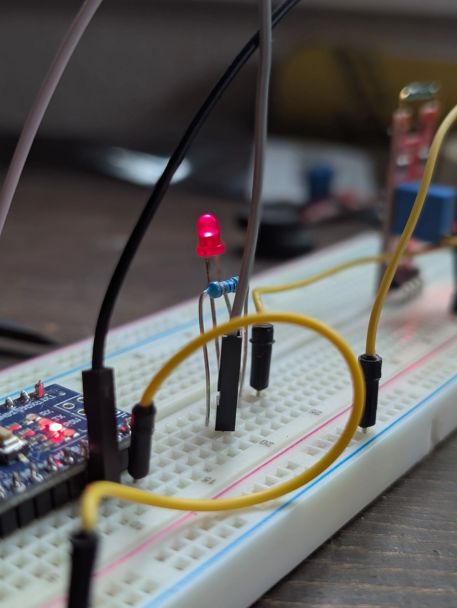

Smart Chess Board Project
I'm excited to share that I'm starting a new electronics project: building a smart chess board from the ground up. The board will use magnetic sensors called reed switches and an Arduino to sense piece movement and recognize legal moves in real time.
